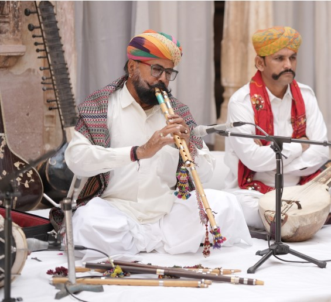
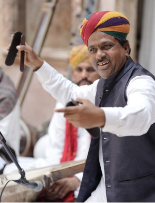
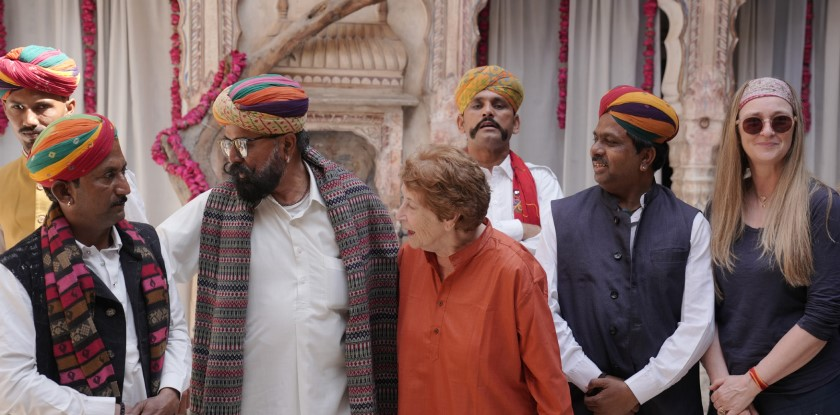

TAGA RAM BHEEL

Taga Ram Bheel is a renowned Padma Shri awardee (2026) and maestro of the algoza (twin-flute)
folk instrument
from Jaisalmer, Rajasthan. He founded the Algoza Folk Music Institute in Moolsagar, Jaisalmer,
to support
artists from backward communities and has performed in more than 35 countries, promoting
traditional
Rajasthani folk music.
Born into the Bhil Rajput community, he grew up in a family with limited financial resources. His
father sent him
to the forests (open scrublands and grasslands known as Oran in the Thar Desert) to graze sheep
and goats. It was
during these solitary hours in the Thar Desert that he taught himself to play by mimicking the
sounds of nature.
Because his father was also an algoza player, young Taga Ram would often sneak his father’s
instrument into the
forest to practice in secret, fearing he might be scolded for not focusing on his work.
He bought his first algoza at age 11 for just a few rupees and spent years mastering circular
breathing –
a difficult technique that allows him to play continuously without pausing for breath. He was
inspired by the
musical traditions of the Managiyar community, who performed in Rajput court, and later found in
a mentor in
Ustad Akbar Khan.
After nearly a decade of secret practice, he gave his first public performance at the Jaisalmer
Desert Festival in 1981
at age 18, which launched his professional career. We are honoured to have him perform with his
team in Mukunda
in Holi, a performance that truly elevates the standards of traditional Courtyard concerts of
India.

